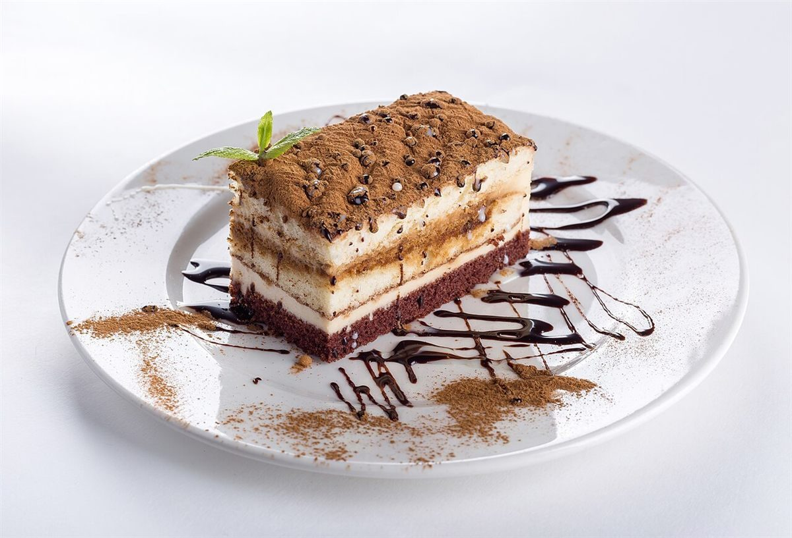

カフェ / 石川県かほく市
トモル
クレープリー
カフェ「トモルクレープリー」のご案内ページです。営業時間やメニューなど、詳しいことは準備中。まずはInstagramをのぞいてみてください。
制作側の連想
針を外す小さな道具を、配置図にしてみる
このサイトは、ホッチキスの針を外す小さな道具を図にしたつもりで作りました。六つの部位に番号をふり、上の図と並べています。制作側の連想で、お店の理念・由来とは無関係です。実際の製品の仕様を示すものでもありません。
凡例
六つの部位
- 1握り手で握って力を伝える、左右ひと組の持ち手。
- 2ばね握りを開く向きへ戻す、二本の腕のあいだの小さなばね。
- 3支点二本の腕を重ねてとめる、動きの軸になる一点。
- 4上あご針の上側に当て、紙の面をおさえる側の先端。
- 5下あご針の脚の下へ差し込む、薄くとがった爪の側。
- 6逃げ溝爪の中ほどに刻んだ、針の脚を受ける小さな溝。
写真帯(イメージ)
甘いものとコーヒーの写真




写真はフリー素材のイメージです。お店のものではなく、お店で提供している商品を示すものでもありません。
写真帯(イメージ)
パンとコーヒー豆の写真


写真はパンとコーヒー豆のイメージです。お店のものではありません。
ご案内
お店のこと(確認できたものだけ)
| 所在地 | 〒929-1127 石川県かほく市大崎チ−59−１ |
|---|---|
| 電話 | 準備中 |
| 営業時間 | 準備中 |
| 定休日 | 準備中 |
| ご予約 | 準備中 |
| 駐車場 | 準備中 |
| SNS | Instagram @tomoru_creperie |